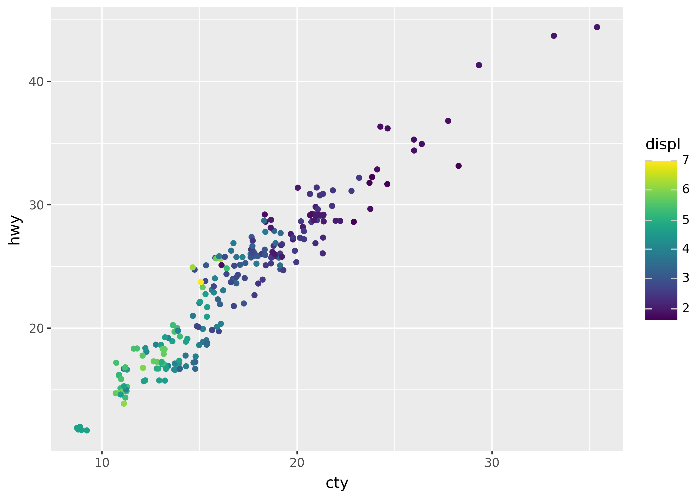

This page provides an overview of Plotnine’s most important concepts and corresponding syntax. Throughout this overview, we’ll focus on reproducing the plot below, which looks at city (cty) versus highway mileage (hwy) across different years of cars:
Every plot in Plotnine starts with passing data to the ggplot() function. The data can be a Pandas or Polars DataFrame. Plotnine works best when the data is in a tidy format, which tends to be longer—with more rows and fewer columns.
from plotnine import*from plotnine.data import mpgggplot(data=mpg)
aes() mapping
The aes() function maps columns of data onto graphical attributes–such as colors, shapes, or x and y coordinates. (The name aes() is short for aesthetic.)
We can map the cty and hwy columns to the x- and y- coordinates in the plot using the code below:
ggplot(data=mpg, mapping=aes(x="cty", y="hwy"))
geom_*() objects
Functions starting with geom_*() specify geometric objects (geoms) to add to the plot. Geoms determine how to turn mapped data into visual elements–such as points, lines, or even boxplots.
Here is how we can map the cty and hwy columns to points with a smooth trend line on top:
( ggplot(mpg, aes("cty", "hwy"))# to create a scatterplot+ geom_point()# to fit and overlay a loess trendline+ geom_smooth(method="lm", color="blue"))
scale_*() translations
The scale_*() functions customize the styling of visual elements from a data mapping. This includes color palettes, axis spacing (e.g. log scale), axis limits, and more. Scales can set the names on guides like axes, legends, and colorbars.
The names of scales follow the pattern scale_<aesthetic>_<type>, where <aesthetic> is the name of an aesthetic attribute, like x, y, or color. If we want to use the plasma palette for color, we can use the code below:
The position_*() functions adjust the position of elements in the plot. For example, by adding a small amount of random noise (jitter) to the x- and y- coordinates of points, so they don’t cover each other.
( ggplot(mpg, aes("cty", "hwy", color="displ"))# add a small amount of jitter+ geom_point(position=position_jitter()))

facet_*() subplots
Facets split a plot into multiple subplots. The two facet functions, facet_grid() and facet_wrap(), determine how to split the data. For example, we can create a grid of plots based on the year and drv columns:
The coord_*() functions specify the coordinate system of the plot. Currently, only a few coordinate systems are available. However, in the future systems like coord_polar() will allow for plotting using polar coordinates.
The code below uses coord_fixed() to ensure that the x- and y- axes have the same spacing.
Themes control the style of all aspects of the plot that are not decided by the data. This includes the position of the legend, the color of the axes, the size of the text, and much more.
Use the theme_*() functions to start with a pre-made theme, or the general theme() function to create a new custom theme. Use the element_*() functions to configure new theme settings.